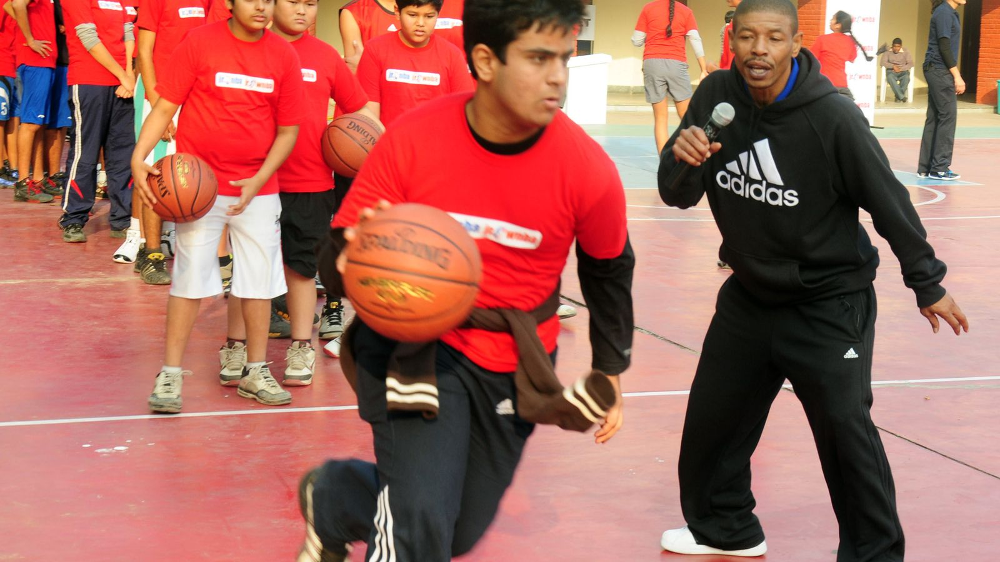

160cmの証明 —— 小さな選手たちがコートに残したもの
バスケットボールは身長のスポーツだと言われる。だが、その「常識」を壊すためだけに生まれてきたような選手たちが、歴史には必ず現れる。

マグジー・ボーグスという反証
NBA史上最も小さな選手、マグジー・ボーグスの身長は160cm。2mの巨人たちが行き交うコートで、彼は14シーズンを生き抜いた。武器は、誰よりも低い位置で仕掛けるスティールと、コート全体を見渡す視野、そして「小さいから無理だ」という声を燃料に変える心臓だ。
1986年のダンクコンテストでは、170cmのスパッド・ウェブが優勝をさらった。会場の誰よりも小さい男が、誰よりも高く跳んだ瞬間。あれほど雄弁な「反証」はない。近年でも175cmのアイザイア・トーマスがリーグ屈指の得点力を見せた時期があり、系譜は途切れていない。
小ささは、物語になる
日本でも、この系譜は生きている。167cmでBリーグのスターであり続ける富樫勇樹。そして今、日本の小さなガードたちが世界の舞台に挑み続けている。彼らのプレーに人々が熱狂するのは、上手いからだけではない。「自分にもできるかもしれない」と思わせてくれるからだ。
2mの選手のダンクは憧れだが、170cmの選手のアシストは希望だ。バスケットボールというスポーツが世界中の路地裏で愛される理由の半分は、この希望でできていると思う。サイズの神話が壊される瞬間を見るために、僕たちは今日も試合を観る。